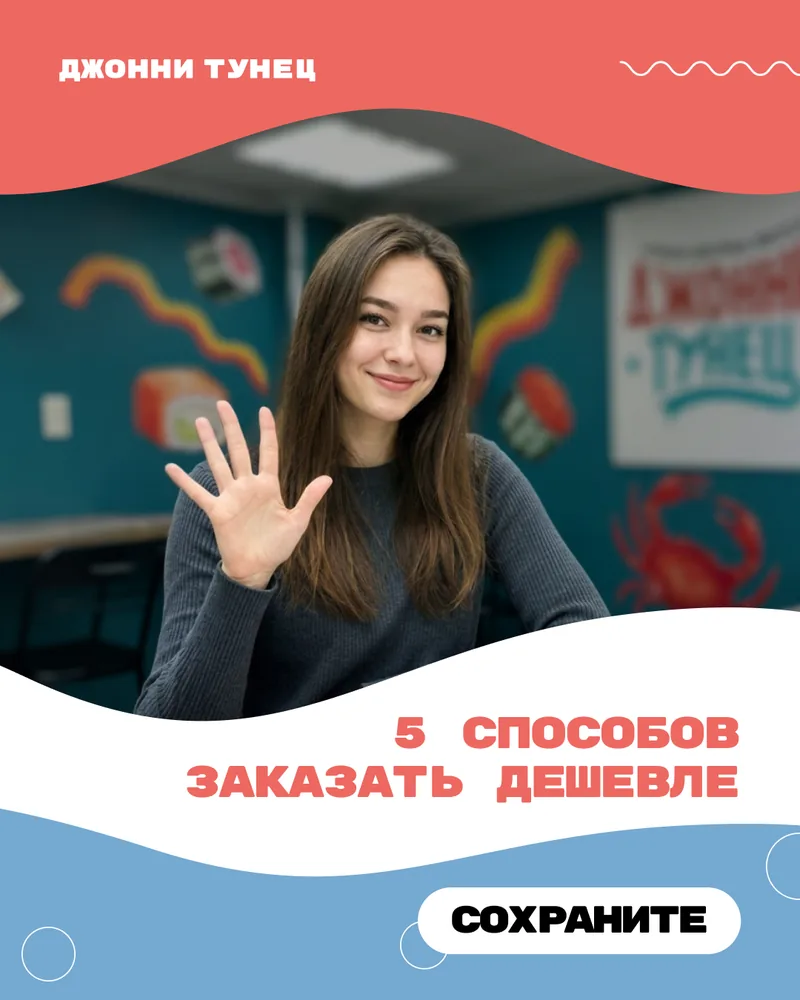
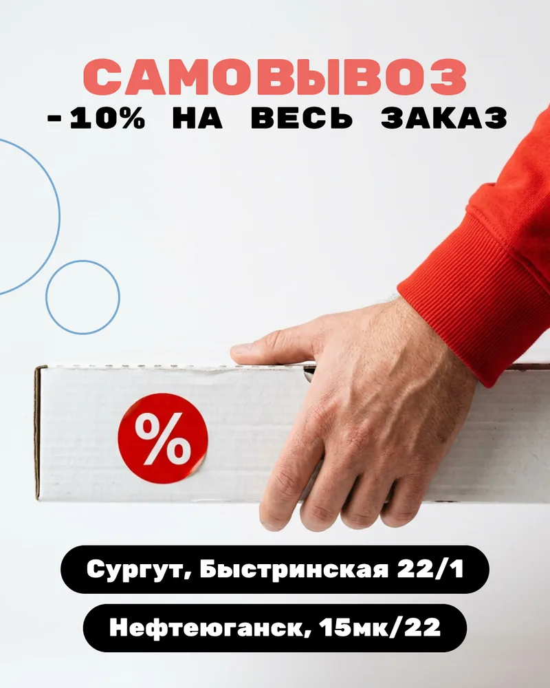
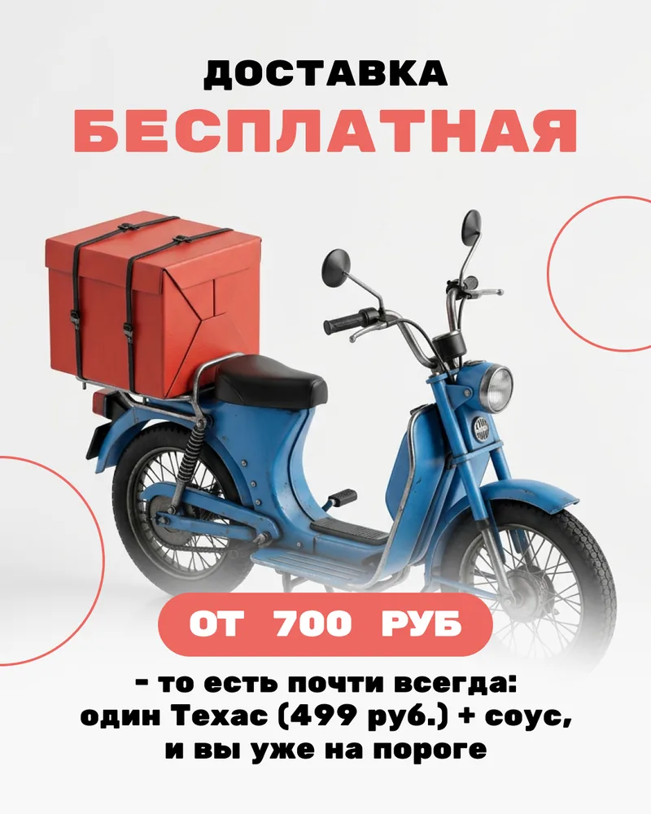
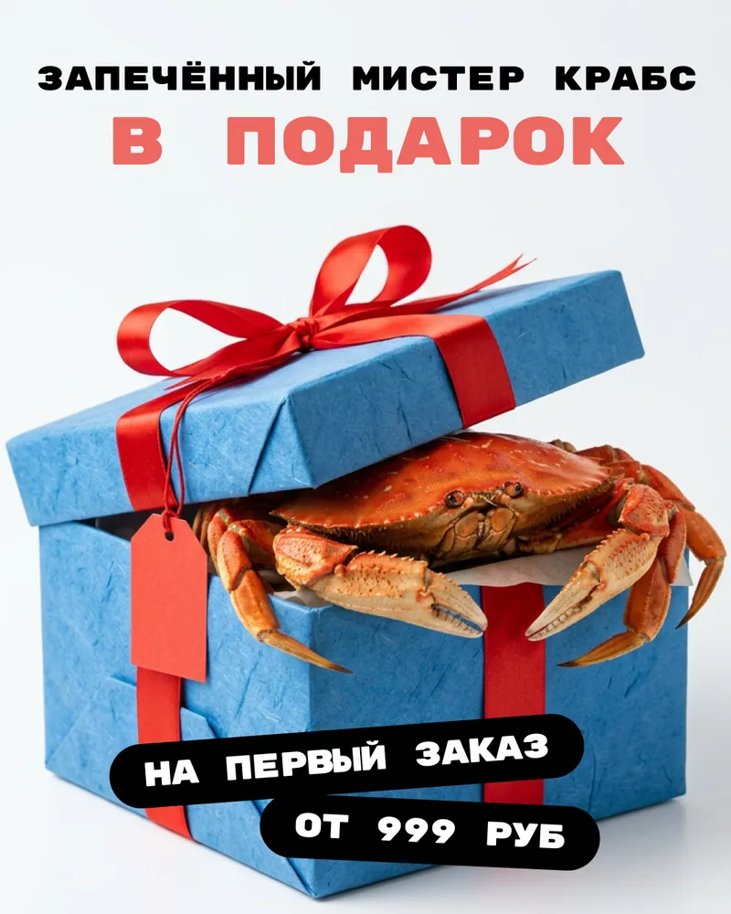
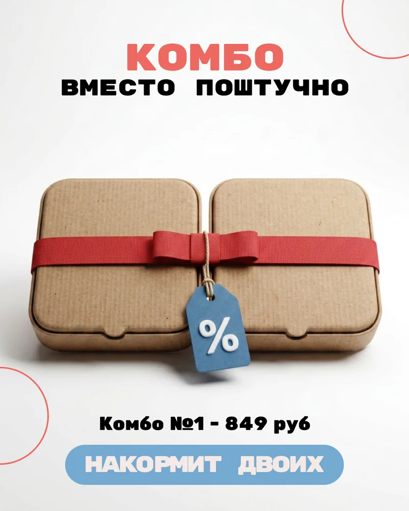
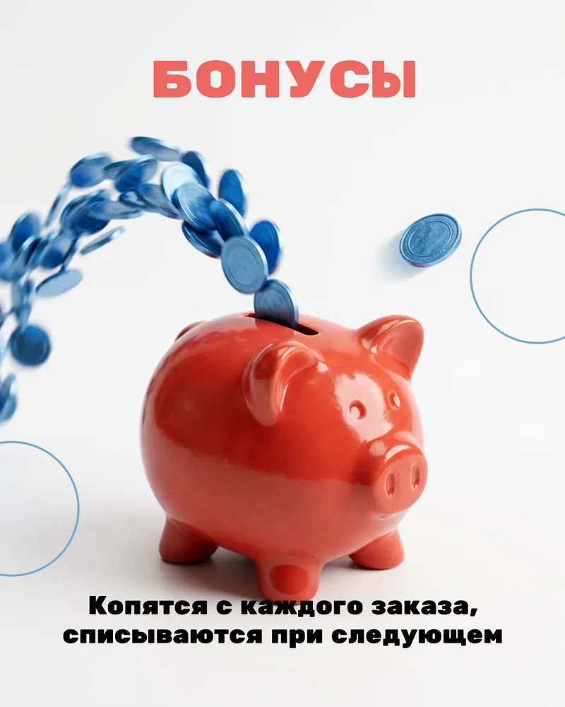
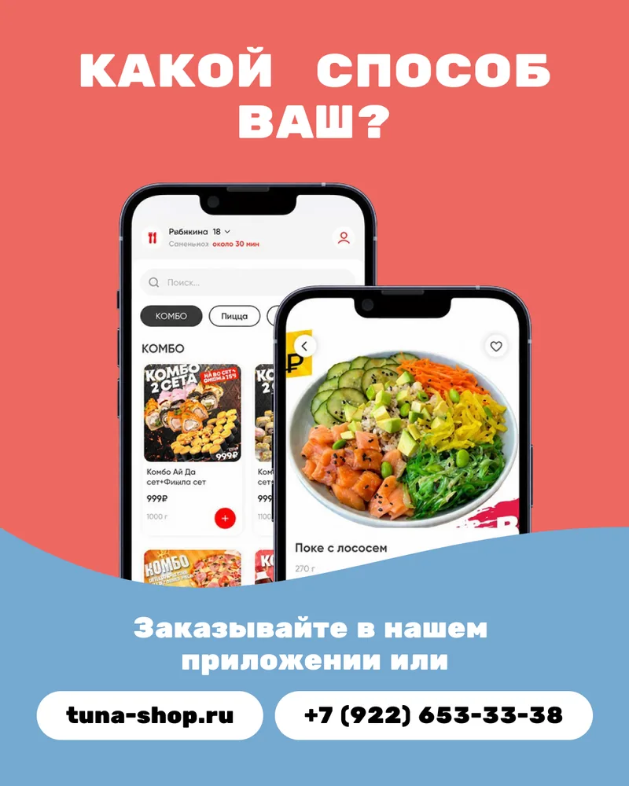

Задача
Показать выгоду без перегруженного рекламного баннера
Разделить предложение на короткие понятные аргументы и провести читателя по ним шаг за шагом.
Доставка еды · Джонни Тунец
Не прячем работу за красивой обложкой. Ниже — весь сценарий карусели и отдельный обычный пост этого же проекта.
Задача
Разделить предложение на короткие понятные аргументы и провести читателя по ним шаг за шагом.
Формат
Карусель даёт место для нескольких способов заказать выгоднее, не превращая один экран в мелкий текст.
Поставленный результат
Обложка, последовательность аргументов и финальный экран в одной визуальной системе бренда.
Вся карусель
Посетитель сайта может оценить каждую часть продукта, а не поверить общему слову «качественно».







Маркетинговая логика
Карусель берём для последовательного объяснения. Обычный пост — когда мысль можно передать одним визуалом и текстом.
Без нескольких конкурирующих заголовков на первом экране.
Читателю не нужно разбирать длинный список мелким шрифтом.
Материал не обрывается и возвращает внимание к предложению бренда.

Конструктор
Сначала выбираете число публикаций. Затем усиливаете только те темы, которым действительно нужна последовательность до семи слайдов.
10 постов — 4 990 ₽. Одна карусель — +250 ₽.
Собрать свой пакетНужен связный месяц контента?
Команда готовит темы, тексты, дизайн и публикацию. Вы утверждаете материалы.